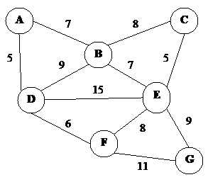

আগের লেখায় আমরা বাইনারি সার্চ কিভাবে কাজ করে দেখেছি। এখন একই পদ্ধতি ব্যবহার করে আমরা অন্যরকম কিছু সমস্যা সমাধান করবো। আমরা এখন যেটা শিখবো সেটা বাইসেকশন মেথড নামেই বেশি পরিচিত।
সহজ একটা সমস্যা সমাধান করতে করতে আমরা বাইসেকশন কিভাবে কাজ করে দেখবো। মনে করো তুমি যে ভাষা ব্যবহার করে প্রোগ্রামিং করছ সেখানে বর্গমূল বের করার জন্য কোনো ফাংশন নাই, তোমাকে নিজে ফাংশন লিখে নিতে হবে। আমরা mysqrt(X) নামের একটা ফাংশন লিখবো যেখানে X সংখ্যাটা পাঠালে সংখ্যাটার বর্গমূল রিটার্ন করবে, X সংখ্যাটা দশমিকযুক্ত হতে পারে, তবে শূণ্যের কম হবে না।
আমরা জটিল কোনো গাণিতিক হিসাবে যাবো না বর্গমূল বের করার জন্য, আমরা বাইনারি সার্চ করেই বর্গমূল বের করে ফেলবো!
একটু মনে করি আমরা একটা ছোট থেকে বড় সাজানো অ্যারেতে কোনো সংখ্যা খুজে বের করার সময় কি করছিলাম। মাঝখানের সংখ্যাটা যদি বেশি বড় হয় তাহলে ডানের অংশ বাদ দিয়ে দিচ্ছিলাম, বেশি ছোটো হলে বামের অংশটা বাদ দিয়ে দিচ্ছিলাম।
বর্গমূল বের করার সময় আমরা জানি যে X এর বর্গমূল অবশ্যই ০ থেকে X এর মধ্যের একটা সংখ্যা হবে। ধরো X=১৫। আমরা প্রথমে ঠিক মাঝের সংখ্যাটা নিবো। এক্ষেত্রে মাঝের সংখ্যা হলো ৭.৫ যাকে আবার বর্গ করলে পাওয়া যায় ৫৬.২৫ যা ১৫ এর থেকে অনেক বড়। তারমানে ৭.৫ থেকে ১৫ পর্যন্ত বাকি সব সংখ্যার বর্গই ১৫ এর থেকে বড়, এই অংশটা আমরা বাদ দিয়ে দিতে পারি।
এখন তাহলে আমরা আবার ০ থেকে ৭.৫ এর মধ্যে খুজবো। মাঝের সংখ্যাটা হলো ৩.৭৫ যাকে বর্গ করলে পাই ১৪.০৬২৫ যা ১৫ থেকে ছোটো। তারমানে ০ থেকে ৩.৭৫ পর্যন্ত অংশে বর্গমূল পাবার কোনো সম্ভাবনা নেই। এখন আবার ৩.৭৫ থেকে ৭.৫ এর মাঝে খুজবো।
পুরো সিমুলেশনটা হাতেকলমে করছি না, আশা করি তুমি বুঝতে পারছো যে বর্গমূল না পাওয়া পর্যন্ত আমরা এভাবেই খুজতে থাকবো। নিচের কোডটা দেখো:
|
1 2 3 4 5 6 7 8 9 10 11 12 13 14 15 |
def mysqrt(X): low=0.0 high=X while high-low>.0001: mid=(low+high)/2 print low, high, mid, mid*mid if mid*mid>X: high=mid else: low=mid print mid,mid*mid return mid mysqrt(15) |
এই কোডটা চালালে দেখবে বর্গমূল আসছে 3.87296676636 যাকে আবার বর্গ করলে পাওয়া যায় 14.9998715733। বুঝতেই পারছো দশমিক সংখ্যার প্রিসিশনের সমস্যার কারণে একদম সঠিক উত্তর পাওয়া যায় নি, কাছাকাছি একটা উত্তর পাওয়া গিয়েছে। ৪নম্বর লাইনটা খুব গুরুত্বপূর্ণ, এখানে আমরা ঠিক করছি কতক্ষণ আমরা খোজা চালিয়ে যাবো, যত বেশিক্ষণ খুজবো সঠিক উত্তরের তত কাছাকাছি পৌছাতে পারবো। এখানে আমরা high এবং low এর পার্থক্য যতক্ষণ না খুব ছোট হয়ে যাচ্ছে ততক্ষন খুজতেসি। তুমি .0001 এর জায়গায় আরো কোনো ছোটো সংখ্যা বসালে দেখবে আগের থেকে ভালো ফলাফল পাচ্ছো। যেমন .000000001 ব্যবহার করলে বর্গমূল পাবে 3.87298334594 যাকে আবার বর্গ করলে পাওয়া যায় 14.9999999979।
তুমি চাইলে নির্দিষ্ট করে বলে দিতে পারো বাইসেকশন কয়টা ধাপ পর্যন্ত চলবে। তখন কোডটা হবে এরকম:
|
1 2 3 4 5 6 7 8 9 10 11 12 13 14 15 |
def mysqrt(X): low=0.0 high=X for step in range(64): mid=(low+high)/2 print low, high, mid, mid*mid if mid*mid>X: high=mid else: low=mid print mid,mid*mid return mid mysqrt(15) x |
এবার আমরা high, low এর পার্থক্যের কথা চিন্তা না করেই ৬৪ বার সার্চ করেছি। একটা সংখ্যাকে ৬৪ বার ২দিয়ে ভাগ করা মানে সংখ্যাটাকে প্রচন্ডরকম ছোটো করে ফেলা, তাই তুমি এভাবে সঠিক উত্তরের খুব কাছে পৌছে যাবে। তুমি চাইলে ৬৪ বারের জায়গায় ১০০ বা ২০০ বারও ভাগ করতে পারো আরো ভালো ফলাফলের জন্য, তবে সেক্ষেত্রে কোডের রানটাইমও বেড়ে যাবে। ধাপসংখ্যা নির্ধারণ করার সময় high-lowদ এর মান কত বড় এবং একই সাথে প্রবলেমের টাইমলিমিটের দিকে লক্ষ্য রাখা উচিত।
বাইসেকশন ব্যবহার করে জ্যামিতির অনেক সমস্যা সমাধান করা যায়। ধরো তোমাকে নিচের মত একটা ত্রিভুজ দেয়া আছে:
 AB, AC আর BC এর দৈর্ঘ্য তোমাকে দেয়া আছে, আর বলা আছে যে DE আর BC সমান্তরাল। এছাড়া ADE ত্রিভুজ এবং BDEC ট্রাপিজিয়ামের ক্ষেত্রফলের অনুপাত R ও তোমাকে দেয়া আছে। তোমাকে বলতে হবে AD এর দৈর্ঘ্য কত?
AB, AC আর BC এর দৈর্ঘ্য তোমাকে দেয়া আছে, আর বলা আছে যে DE আর BC সমান্তরাল। এছাড়া ADE ত্রিভুজ এবং BDEC ট্রাপিজিয়ামের ক্ষেত্রফলের অনুপাত R ও তোমাকে দেয়া আছে। তোমাকে বলতে হবে AD এর দৈর্ঘ্য কত?
এটা আমরা সহজেই বাইসেকশন দিয়ে সমাধান করতে পারি। তুমি অনুমান করে নাও যে AD এর দৈর্ঘ্য হলো x। এখন AD এর দৈর্ঘ্য জানলে তুমি স্কুলে পড়া ত্রিভুজের অনুপাতের নিয়ম (AD/AB=AE/AC=DE/BC) দিয়ে সহজেই AE, EC, DE বের করে ফেলতে পারবে। এখন তুমি বাহুর দৈর্ঘ্য দিয়ে ADE এবং BDEC এর ক্ষেত্রফলও সহজে বের করতে পারবে। ক্ষেত্রফল জানার পর অনুপাত বের করে ফেল। যদি দেখ যে তুমি যে অনুপাতটা পেয়েছো সেটা R এর থেকে ছোটো তারমানে তুমি AD এর যে দৈর্ঘ্য x অনুমান করেছিলে সেটা আসল দৈর্ঘ্য থেকে ছোটো। তাহলে তুমি x থেকে high পর্যন্ত রেঞ্জে আবার খুজতে থাকো। আর যদি দেখো যে তোমার পাওয়া অনুপাতটা R এর থেকে বড় তাহলে 0 থেকে x পর্যন্ত রেঞ্জে খুজতে থাকো। high এর মান শুরুতে কত হবে সেটা চিন্তা করে বের করার কাজ তোমার :)।
বাইসেকশন কখন কাজ করবে কখন করবে না এটা বুঝতে পারা খুবই গুরুত্বপূর্ণ। বর্গমূল বের করা শেখার পর তুমি হয়তো মনে করলে sin(x)+5*log10(x)=5.27 ইকুয়েশনটার সমাধান বাইসেকশন দিয়ে করবে। তুমি অনুমান করলে x=50, তাহলে sin(50)+5*log10(50)=9.26। এখন কি তুমি নিশ্চিত ভাবে বলতে পারো যে উত্তর ৫০ এর বামে আছে? পারবে না, কারণ x এর মান কমলে sin(x)+5*log10(x) এর মান বাড়তেও পারে, কমতেও পারে। x এর বিভিন্ন মানের জন্য গুগলে গ্রাফটা প্লট করলে তুমি এরকম পাবে:
{kind=link}
এই ইকুয়েশনের ক্ষেত্রে তুমি একটা রেঞ্জের মাঝখানের মান টা নিয়ে কিছু হিসাব-নিকাশ করে বাম বা ডান দিকে অংশ বাতিল করে দিতে পারো না, কারণ তোমার জানার উপায় নাই কোনদিকে তোমার উত্তরটা আছে। বর্গমূলব করার সময় ইকুয়েশনটা ছিল x^2, সেটাকে প্লট করলে পাওয়া যায় এরকম:
{kind=link}
এক্ষেত্রে বাইসেকশন কাজ করেছে কারণ তুমি সহজেই বাম বা ডানের অংশ ফেলে দিতে পেরেছো।
প্রবলেম সলভ করার সময় প্লট বের করা কোনো দরকার নেই, এটা শুধু মাত্র তোমাকে বুঝাতে দেখিয়েছি। তুমি নিশ্চিত হতে পারো যে মাঝখানের মানটা দেখে কোনো একটা অংশ বাতিল করে দেয়া যাবে শুধুমাত্র তখনই বাইসেকশন কাজ করবে। যেমন log(x)+x^2=y এই ইকুয়েশন বাইসেকশন দিয়ে সমাধান করতে পারবে কারণ x এর মান বাড়ার সাথে সাথে y সবসময় বাড়বে, কিন্তু tan(x)+x^2=y এটা বাইসেকশন দিয়ে সমাধান করতে পারবে না।
এবার বাইসেকশন দিয়ে একটা গ্রাফের প্রবলেম সমাধান করি। তোমাকে একটা গ্রাফ দেয়া আছে এরকম:

প্রতিটি এজ একেকটা রাস্তা যার একটা করে ওয়েট আছে। এখন তুমি A থেকে G তে যেতে চাও এমন ভাবে যেন সেই পথে সর্বোচ্চ ওয়েট এর মান যতটা সম্ভব কম হয়। যেমন A->D->F->G পথে সর্বোচ্চ ওয়েট ১১, আবার A->B->E->G পথে সর্বোচ্চ ওয়েট ৯।
এটা সহজেই বাইসেকশন দিয়ে সমাধান করা সম্ভব। এক্ষেত্রে শুরুতে high=15 কারণ কোনো এজের ওয়েট ১৫ এর থেকে বেশি না, low=০ আর mid=৭। এখন তুমি ৭ এর বড় সবগুলো এজকে গ্রাফ থেকে বাদ দিয়ে দাও আর দেখো যে A থেকে G তে যাওয়ার কোনো রাস্তা আছে নাকি। যদি না থাকে তাহলে ৭ এর বামে উত্তর থাকা সম্ভব না, বামের অংশ বাতিল করে আবার খুজতে থাকো। এক্ষেত্রে বাইসেকশন কাজ করবে কারণ মাঝের মান টা দেখে তুমি বাম বা ডানের অংশ বাতিল করে দিতে পারছো। (এই সমস্যাটা বাইসেকশনের বদলে ডায়াক্সট্রা অ্যালগোরিদমকে কিছুটা পরিবর্তন করেও সমাধান করা সম্ভব।)
অনুশীলনের জন্য সমস্যা:
http://www.lightoj.com/volume_showproblem.php?problem=1043
http://www.lightoj.com/volume_showproblem.php?problem=1076

ফেসবুকে মন্তব্য
Powered by Facebook Comments
If we omit every edge less than or greater than mid value then how come we’ll be able to determine as there is a mixture of edges greater or less than 7?
i’ve realised it……..sorry for the unnecessary question that i asked……